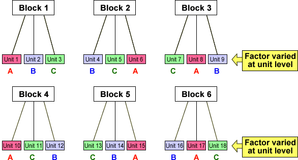
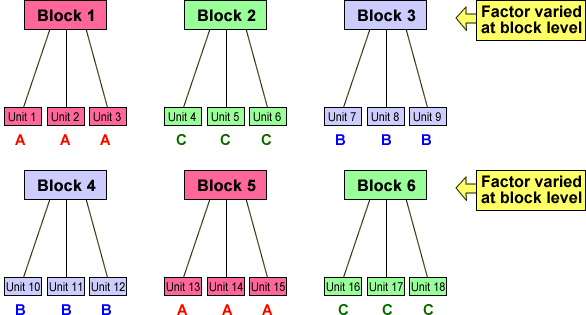

Blocks
In many experiments, there is structure to the experimental units that is known before the experiment is started. This is often modelled by defining blocks of similar units. The blocks may be based on measured characteristics of the units or may describe a more fundamental structure of the units.
Factors varied at unit level
In earlier chapters, it has been possible to apply (and vary) treatments at the level of the experimental units:

Factors varied at block level
In other types of experiment, it may not be possible to vary a factor within each block.

Confounding of factor and blocks
The problem with a conventional analysis of an experiment with a factor varied at block level is that:
The factor effect is completely confounded with differences between the blocks.
In the experimental design that is illustrated in the diagram above, higher response values for experimental units getting factor level A (1, 2, 3, 13, 14, and 15) could have equally been caused by:
Analysis of variance
In a conventional analysis of variance table, the effect of the blocks is removed first and the further reduction to the residual sum of squares when the factor is added to the model (the sum of squares explained by the factor after the blocks) is used to test the effect of the factor.
If the factor is varied at block level, this results in an analysis of variance table with zero degrees of freedom for the factor, so the effect of the factor cannot be tested.
| Source of variation |
Sum of sqrs |
d.f. | Mean ssq | F-ratio | p-value |
|---|---|---|---|---|---|
| Blocks | SSB | 5 | MSB | MSB / MSResid | (F distn) |
| Factor (after blocks) | 0 | 0 | undefined | undefined | undefined |
| Residual | SSResid | 12 | MSResid | ||
| Total | SSTotal | 17 |
In order to analyse data from an experiment in which a factor is varied at block level, a different approach is needed.